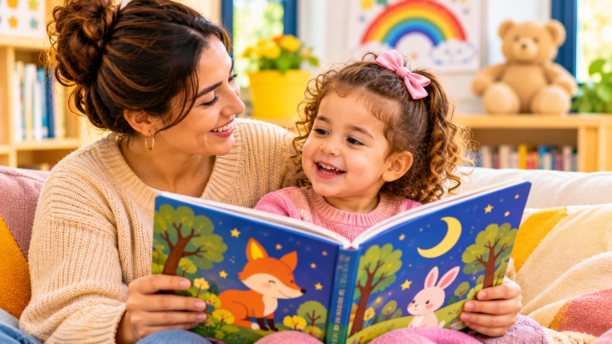

Un livre d’images, une petite histoire avant de dormir ou quelques pages regardées ensemble : la lecture peut trouver sa place très tôt dans la vie d’un enfant.
Même lorsqu’il ne comprend pas encore toutes les phrases, il observe les illustrations, écoute la voix de l’adulte et découvre progressivement le plaisir des histoires. Ce moment partagé lui fait entendre les sons, les rythmes et les rimes de la langue, ce qui contribue au développement du langage, et il nourrit la relation avec le parent.
La lecture : bien plus qu’une histoire
Lire avec un jeune enfant lui permet d’entendre des mots variés, de découvrir des situations et de faire des liens entre les images et le monde qui l’entoure. C’est l’une des nombreuses façons de favoriser le développement du langage au quotidien.
Les livres stimulent également la curiosité et l’imagination. Une illustration peut susciter une question, rappeler une expérience ou donner envie d’inventer la suite.
La lecture partagée est aussi un moment d’attention réciproque : l’adulte suit les réactions de l’enfant, commente ce qu’il regarde et répond à ses initiatives.
Adapter la lecture à l’âge
Ces repères sont indicatifs : chaque enfant avance à son rythme.
- Vers 15 à 18 mois : il regarde quelques pages avec vous, montre une image du doigt et tente de tourner les pages. Les livres cartonnés, solides et faciles à manipuler, sont bien adaptés.
- Vers 2 ans : il montre une image lorsqu’on la lui demande (« Où est l’ours ? »). Les imagiers, les histoires courtes et répétitives et les comptines illustrées lui plaisent souvent. Les imagiers sont aussi une belle occasion de découvrir les formes et les couleurs à travers les livres.
- Vers 2 ans et demi à 3 ans : il nomme ce qu’il voit lorsqu’on lui pose la question, tourne les pages une à une et peut dire ce qui se passe sur une image (« Il court », « Il mange »).
- Vers 3 à 6 ans : il apprécie des histoires plus longues. Vous pouvez vous arrêter pour lui demander ce qui va se passer ensuite, ou l’inviter à vous « lire » à son tour une histoire qu’il connaît par cœur.
Comment donner le goût des livres ?
Laisser l’enfant participer
Il peut tourner les pages, montrer un personnage, nommer un objet ou revenir plusieurs fois sur la même illustration. Cette participation fait partie du plaisir de lire.
Lire à voix haute, sans chercher la perfection
Vous pouvez modifier votre voix, faire une pause ou commenter une image. Il n’est pas nécessaire de respecter chaque phrase, ni de terminer l’histoire, si l’enfant préfère échanger autour des illustrations.
Installer un petit rituel
Un moment calme après le repas ou avant le coucher peut aider à faire de la lecture une habitude. Il n’est toutefois pas indispensable de lire tous les jours à heure fixe : la régularité doit rester compatible avec le rythme familial. Quelques minutes suffisent souvent.
Lire et raconter dans la langue de la famille
La lecture peut se faire dans la ou les langues parlées à la maison, kabyle, arabe, français ou d’autres encore : chacune nourrit le langage de l’enfant. Si vous ne trouvez pas de livre dans votre langue, vous pouvez raconter librement l’histoire d’un album à partir des images.
Les histoires ne passent pas seulement par les livres. Un conte transmis dans la famille, une histoire racontée de mémoire ou inventée ensemble ont aussi toute leur place.
Questions fréquentes
Et si mon enfant ne tient pas en place ?
Un jeune enfant peut écouter quelques minutes seulement, se lever, revenir ou demander le même livre plusieurs fois. Cela ne signifie pas qu’il n’aime pas les histoires. Proposez des lectures courtes, suivez son intérêt et arrêtez lorsque son attention s’éloigne. Vous pourrez reprendre plus tard.
Faut-il acheter beaucoup de livres ?
Non. Il est possible d’emprunter des livres, de relire les mêmes histoires et de fréquenter une bibliothèque lorsque cela est possible. Laisser l’enfant choisir, même s’il réclame toujours le même livre, fait partie du plaisir : la répétition rassure souvent l’enfant et lui permet de remarquer de nouveaux détails.
En conclusion
Lire une histoire à son enfant, c’est lui offrir un moment de découverte, de langage et de proximité. Quelques pages suffisent pour partager une expérience agréable, comme bien d’autres moments qui montrent les bienfaits du jeu dans les apprentissages.
Le meilleur livre est souvent celui que l’enfant a envie de retrouver encore et encore.
L’équipe de l’École Maternelle Lila, Avec vous, pas à pas.